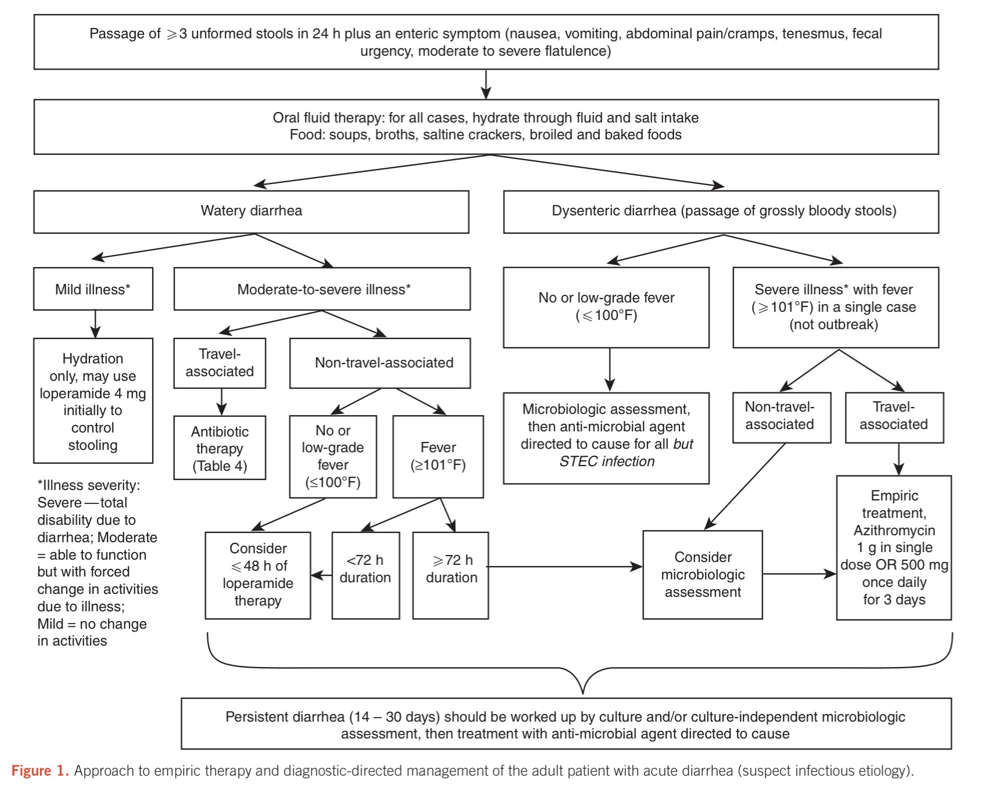

Infectious Diarrheal Diseases
Infectious Diarrheal Diseases
Russell Lewis
Associate Professor, Infectious Diseases
Department of Molecular Medicine
MEP 2491 Infectious Diseases
27 March 2023

Objectives
- Identify the most common causes of infectious diarrhea in adult patients in resource-rich settings
- Describe how the patient history and clinical presentation of diarrhea may favour viral versus bacterial causes that benefit from antibiotic therapy
- Recognize warning signs for severe diarrheal disease that require immediate hospitalization and/or antibiotic therapy
- Describe management approach and treatment of common infectious diarrheal pathogens
We will not be discussing (in detail) diarrheal diseases in resource-poor countries. Information on these infections should be obtained from the WHO guidelines
Background
- Diarrheal disease is one of the top ten leading causes of death worldwide
- Diarrheal disease is a particular concern for children younger than five years old in resource-limited settings
- Among adults in resource-rich settings, diarrhea is often a “nuisance disease” in the healthy individual
- Most cases of acute diarrhea in adults are of infectious etiology, and most cases resolve with symptomatic treatment alone
- When clinicians care for adults with diarrhea, two important decision points are:
- When to perform stool testing
- Whether to initiate empiric antimicrobial therapy
Definitions
- Diarrhea is defined as the passage of loose or watery stools, typically at least three times in a 24-hour period
- Reflects increased water content of the stool, whether due to impaired water absorption and/or active water secretion by the bowel
- Acute – 14 days or fewer in duration
- Persistent diarrhea – more than 14 but fewer than 30 days in duration
- Chronic – more than 30 days in duration
- Invasive diarrhea, dysentery- diarrhea with visible blood or mucous
- Dysentery is commonly associated with fever and abdominal pain
Etiology
- Most cases of acute diarrhea are due to infections and are self-limited
- Most cases of acute infectious diarrhea are viral, as indicated by the observation that stool cultures are positive in only 1.5 to 5.6 % of cases
- The major causes of acute infectious diarrhea include:
- Viruses (norovirus, rotavirus, adenoviruses, astrovirus, and others)
- Bacteria (Salmonella, Campylobacter, Shigella, enterotoxigenic Escherichia coli, Clostridioides difficile, and others)
- Protozoa (Cryptosporidium, Giardia, Cyclospora, Entamoeba, and others)
Norovirus “winter vomiting virus”
Norovirus
- Epidemiology
- Nonenveloped RNA virus from Caliciviradae family
- Commonest cause of gastroenteritis worldwide
- Although antibody prevalence rises through childhood.
- Re-infection is common as their is no lasting immunity due to re-infection with diversity of strains
- Transmission
- Spread by fecal-oral route from person to person, aerosol in vomitus, contaminated food and water, fomite on surfaces (resists killing by alcohol or chlorine, temperatures up to 60°C)
- Outbreaks are common
Norovirus
- Clinical manifestations:
- Vomiting
- Watery diarrhea, non-bloody and non-bilious, 4-8 stools/ 24 hours period
- Fever in 50% of cases
- Malaise, headache
- Abdominal pain
- Patients at risk of dehydration
- White blood cell count elevated or normal, lymphopenia common
- Short duration of illness (48-72 hours) with complete recovery
- Diagnosis:
- Diagnosed clinically although antigen detection (enzyme immunoassay) or PCR may be used in outbreak settings.
- Treatment:
- Supportive care (hydration)
Rotavirus
- Mean duration of symptoms for 3-8 days
- Occurs in children 6 months-2 years
- Occasionally causes diarrhea in elderly
- Vomiting less of a prominent feature vs. norovirus
image: Centers for Disease Control
Enterotoxigenic Escherichia coli (ETEC)
- Cause of dehydrating diarrhea , especially in developing world (< 2 years) due to ability to survive in water and production of heat-stabile and heat-labile toxins
- Causes watery diarrhea in returning travellers with nausea but no vomiting and symptoms lasting as long as 5 days
Enteropathogenic E. coli (EPEC)
- Diarrhea common in children < 6 months in developing world
- Sporadic outbreaks in adults
- Severe diarrhea that can result in dehydration and malnutrition
Entero-hemorrhagic E coli (EHEC)
or Shiga toxin-producing E. coli (STEC)
Incubation of 1-4 days
Main serotypes E. coli O157:H7 or E. coli O101:h4 (STEC)
Often cause bloody diarrhea, abdominal tenderness with lack of fever
Occasional cause of pseudomembraneous colitis (when negative for C. difficile)
Increased White blood cell count
Associated with outbreaks (contaminated food)
Can cause hemolytic uremia syndrome (5-10 days after diarrhea) 6-9% of EHEC infections affecting mostly children < 10 years:
Renal failure
Thrombocytopenia
Thrombotic microangiopathic anemia (↓ PLT count, haptoglobin, RBC, ↑LDH, SeCr)
Neurologic symptoms-motor deficits and seizure)
Schistocytes seen in peripheral blood with
HUS
HUS long-term sequelae
- Renal failure and hypertension (39%)
- Neurologic symptoms
Italy: E. coli 0157:H7
How can E. coli O157 infection be detected?
- Culture on sorbitol MacConkey (SMAC) agar with first 6 days of bloody diarrhea
- E. coli O157 cannot ferment lactose, but can ferment sorbitol
- Toxin detection (Shiga toxin, EIA in stool)
Why is it important to identify E. coli 0157 (EHEC)?
- Tracing an outbreak (i.e. contaminated produce)
- Antibiotic therapy increases the risk of HUS in EHEC by 25% and should be avoided, especially in young children
- Treatment with supportive measures and avoidance of anti-motility agents (e.g., loperamide) to reduce the risk of complications
Other E. coli- Enteroinvasive (EIEC) and Enteroaggregative (EaggEC)
- EIEC relatively rare, closely related to Shigella
- Often watery diarrhea- rarely progresses to bloody diarrhea
- EaggEC
- Affects the immunocompromised
- Cause of persistent diarrhea in patients with HIV
- Affects young children more frequently
- Can often be eradicated with antibiotics
Campylobacter
- Gram-negative that belongs to the Enterobacteriales (previously known as a Vibrio-type organism associated with abortion in cattle and sheep)
- Seen worldwide and a leading cause of gastroenteritis, including in the Arctic and temperate areas
- Campylobacter jejuni most common species
Campylobacter transmission
- Cross-contamination of food: Common commensal in GI tract of wild and domestic animals, poultry and birds
- Food handlers: good hand hygiene; meat should be cooked to high temperatures (82°C, 180°F).
- Don’t drink unpasteurized milk
- Infection can occur from eating undercooked meat
- Survives in freshwater (including at temps below (15°C) → infection from swimming or drinking contaminated water
- Direct transmission from infected animals, pets, carcasses- handwashing should be encouraged especially for vulnerable adults or children visiting farms or petting zoos
- Person-to-person transmission (nursery staff working with infected children)
- Sexual transmission (anal intercourse)
- Increased infection risk in patients with increased gastric acidity (achlorhydria or protein pump inhibitor use)
Clinical factures of campylobacter infection
- Mean incubation 3 days (range 1-7)
- Campylobacter can affect either large or small bowel, hence causes both watery and bloody diarrhea
- Classic prodrome: Fevers, rigours, dizziness in 1/3 of patients prior to GI symptoms → increased severity of disease
- Abdominal pain:
- Abrupt, sever, cramping, colicky, periumbilical- not always accompanied by diarrhea
Salmonella
Enteric fever or typhoid (Salmonella enterica serotype typhi)
Clostridiodes (Clostridium) difficile
Causes of acute infectious diarrhea in adults in resource-rich settings
| Likely pathogens | Mean incubation period | Classic/ common food sources | Other epidemiologic clues | |
|---|---|---|---|---|
| Watery diarrhea | Norovirus | 24 to 48 hours | -Shellfish, prepared foods, vegetables, fruit | Outbreaks in: - Restaurants - Health care facilities - Schools and childcare centers - Cruise ships - Military populations |
| Clostridioides (formerly Clostridium difficile) | N/A | N/A | Antibiotic use - Hospitalization - Cancer chemotherapy - Gastric acid suppression - Inflammatory bowel disease |
|
| Clostridium perfringens | 8 to 16 hours | Meat, poultry, gravy, home-canned goods | ||
| Enterotoxigenic Escherichia coli | 1 to 3 days | Fecally contaminated food or water | -Travel to resource-limited settings | |
| Other enteric viruses (rotavirus, enteric adenovirus, astrovirus, sapovirus) | 10 to 72 hours | Fecally contaminated food or water | -Daycare centers -Gastroenteritis in children -Immunocompromised adults |
|
| Giardia lamblia | 7 to 14 days | Fecally contaminated food or water | -Daycare centers -Swimming pools -Travel, hiking, camping (particularly when there is contact with water in which beavers reside) |
|
| Cryptosporidium parvum | 2 to 28 days | Vegetables, fruit, unpasteurized milk | -Daycare centers -Swimming pools and recreational water sources - Animal exposure -Chronic diarrhea in advanced HIV infection |
|
| Listeria monocytogenes | 1 day (gastroenteritis) | Processed/delicatessen meats, hot dogs, soft cheese, pâtés, and fruit | -Pregnancy -Immunocompromising condition -Extremes of age |
|
| Cyclospora cayetanensis | 1 to 11 days | Imported berries, herbs | -Chronic diarrhea in advanced HIV infection | |
| Inflammatory diarrhea (fever, mucoid or bloody stools)¶ |
Nontyphoidal Salmonella | 1 to 3 days | -Poultry, eggs, and egg products, fresh produce, meat, fish, unpasteurized milk or juice, nut butters, spices | -Animal contact (petting zoos, reptiles, live poultry, other pets) -Travel to resource-limited settings |
| Campylobacter spp | 1 to 3 days | Poultry, meat, unpasteurized milk | -Travel to resource-limited settings -Animal contact (young puppies or kittens, occupational contact) |
|
| Shigella spp | 1 to 3 days | Raw vegetables | -Daycare centers Crowded living conditions -Men who have sex with men -Travel to resource-limited settings |
|
| Enterohemorrhagic E. coli | 1 to 8 days | Ground beef and other meat, fresh produce, unpasteurized milk and juice | -Daycare centers -Nursing homes -Extremes of age |
|
| Yersinia spp | 4 to 6 days | Pork or pork products, untreated water | -Abnormalities of iron-metabolism (eg, cirrhosis, hemochromatosis, thalassemia) -Blood transfusion |
|
| Vibrio parahemolyticus | 1 to 3 days | Raw seafood and shellfish | Cirrhosis | |
| Entamoeba histolytica | 1 to 3 weeks | Fecally contaminated food or water | Travel to resourcelimited settings Men who have sex with men |
Clostridioides (formerly Clostridium) difficile can also present with inflammatory diarrhea.
¶ Pathogens that are more classically associated with inflammatory diarrhea can also cause watery diarrhea, particularly early in the course of infection.
Red flag symptoms requiring urgent investigation
- Peristent stool > 1 week
- Fever
- Bloody diarrhea
- Severe abdominal pain
- Signs and symptoms of dehydration (tachycardia, hypotension, confusion, decreased urine output)
- Weight loss
- Recent hospital stay of antibiotic exposure
- Pregnant
- Over the age of 65 years
- Diabetic, living with HIV, or immunocompromised
Evaluation of acute diarrhea in adults

When should patient be evaluated in clinic?
Extraintestinal manifestations
- Symptoms:
- Persistent fever
- Bloody diarrhea
- Severe abdominal pain
- Symptoms of volume depletion (eg, dark or scant urine, symptoms of orthostasis)
- History of inflammatory bowel disease
- Hospitalization should be considered:
- History of immunosuppression (e.g., treatment for malignancy, transplantation, HIV
- Significant cardiovascular diseases
Patient Medical History
- Duration of symptoms
- Frequency and characteristics of stool
- Associated Symptoms
- Evidence of extracellular volume depletion (e.g., dark of scan urine, decreased skin turgor, orthostatic hypotension)
Small Bowel vs. Colon
- Diarrhea of small bowel is typically:
- Watery
- Large volume
- Accompanied by abdominal cramping, bloating and gas
- Diarrhea of large intestine is typically: - Frequent - Regular - Small volume - Painful - Bloody or mucoid stools (red blood and inflammatory cells seen in stool microscopy)
- Caveat: Patients can have both small and large bowel involvement
Small Bowel vs. Colon
| Pathogen | Small bowel | Colon |
|---|---|---|
| Bacteria | Salmonella Escherichia coli¶ Clostridium perfringens Staphylococcus aureus Aeromonas hydrophila Bacillus cereus Vibrio cholerae |
Campylobacter Shigella Clostridioides difficile Yersinia Vibrio parahaemolyticus Enteroinvasive E. coli Plesiomonas shigelloides Klebsiella oxytoca (rare) |
| Virus | Rotavirus Norovirus Astrovirus |
Cytomegalovirus* Adenovirus Herpes simplex virus |
| Protozoa | *Cryptosporidium Microsporidium _Cystoisospor*a_ Cyclospora Giardia lamblia |
Entamoeba histolytica |
¶ EPEC, EAggEC, EHEC, ETEC may all contribute; routine laboratories and cultures will not differentiate these from E. coli which are normal flora
Inflammatory signs: large-bowel infection
Fever, bloody or mucoid stools suggest invasive bacteria (eg, Salmonella, Shigella, or Campylobacter), enteric viruses (eg, cytomegalovirus [CMV] or adenovirus), Entamoeba histolytica, or C. difficile.
- Bloody stools, think: Shiga toxin-producing E. coli (STEC) (eg, E. coli O157:H7) infection.
- Other bacterial causes of visibly bloody diarrhea are Shigella, Campylobacter, and Salmonella species.
- Bloody diarrhea can also reflect noninfectious etiologies such as inflammatory bowel disease or ischemic colitis.
- Syndromes that begin with diarrhea but progress to fever and systemic complaints, such as headache and muscle aches, should raise the possibility of :
- Typhoidal illness (particularly in travellers from resource-limited settings)
- Listeria monocytogenes (particularly if a stiff neck is also present in pregnant patient)
Medical History: Exposures
- Food history
- Residence
- Occupational exposure
- Recent and remote travel
- Pets
- Hobbies
Food history
- Consumption of unpasteurized dairy products, raw or undercooked meat or fish, or organic vitamin preparations may suggest certain pathogens.
- The timing of symptom onset following exposure to the suspected offending food can be an important clue to the diagnosis
- Within six hours – suggests ingestion of a preformed toxin of Staphylococcus aureus or Bacillus cereus, particularly if nausea and vomiting were the initial symptoms
- At 8 to 16 hours – suggests infection with Clostridium perfringens
- More than 16 hours – suggests either viral or other bacterial infection (eg, contamination of food with enterotoxigenic or STEC or other pathogens)
Major foodborne microbes by the principal presenting gastrointestinal symptom
| Major presenting symptom | Likely microbes | Incubation period | Likely food sources |
|---|---|---|---|
| Vomiting | S. aureus | 1 to 6 hours | Prepared food, eg, salads, dairy, meat |
| B. cereus | 1 to 6 hours | Rice, meat | |
| Norwalk-like viruses | 24 to 48 hours | Shellfish, prepared foods, salads, sandwiches, fruit | |
| Watery diarrhea | C. perfringens | 8 to 16 hours | Meat, poultry, gravy |
| Enterotoxigenic E. coli | 1 to 3 days | Fecally contaminated food or water | |
| Enteric viruses | 10 to 72 hours | Fecally contaminated food or water | |
| C. parvum | 2 to 28 days | Vegetables, fruit, unpasteurized milk, water | |
| C. cayetanensis | 1 to 11 days | Imported berries, basil | |
| Inflammatory diarrhea | Campylobacter spp | 2 to 5 days | Poultry, unpasteurized milk, water |
| Nontyphoidal Salmonella | 1 to 3 days | Eggs, poultry, meat, unpasteurized milk or juice, fresh produce | |
| Shiga toxin-producing E. coli | 1 to 8 days | Ground beef, unpasteurized milk and juice, raw vegetables, water | |
| Shigella spp | 1 to 3 days | Fecal contamination of food and water | |
| V. parahemolyticus | 2 to 48 hours | Raw shellfish |
Incubation period and likely food sources are shown for each.
Modified from Centers for Disease Control and Prevention. Diagnosis and management of food borne illness, a primer for physicians. MMWR Recomm Rep April 16, 2004 / 53(RR04);1-33
Other exposures
- Exposure to animals (poultry, turtles, petting zoos) has been associated with Salmonella infection.
- Travel to a resource-limited setting increases the risk of bacterial diarrhea and also informs the risk of certain parasitic infections
- Occupation in daycare centres has been associated with:
- infections with Shigella, Cryptosporidium, and Giardia.
- Rotavirus is a potential consideration, but decreased with vaccination
Additional Medical history
- Recent antibiotic use (as a clue to the presence of C. difficile infection)
- Other medications (such as proton pump inhibitors, which can increase the risk of infectious diarrhea)
- Predisposing conditions:
- Immunocompromised host or the possibility of nosocomial infection
- Medical history informing the likelihood of various pathogens
- Pregnancy increases the risk of listeriosis following consumption of contaminated meat products or unpasteurized dairy products approximately 20-fold
- Cirrhosis has been associated with Vibrio infection
- Hemochromatosis has been associated with Yersinia infection
Physical exam-1
- Exam focus- volume status and identifying complications
- Volume depletion can be suggested by:
- dry mucous membranes
- diminished skin turgor
- postural or frank reductions in blood pressure
- altered sensorium
- Volume depletion can be suggested by:
- These signs can be mild or absent with early hypovolemia
Physical exam-2
Abdominal examination should focus on signs that suggest ileus or peritonitis
- Abdominal distension
- Pain with gentle percussion
- Abdominal rigidity, or rebound tenderness
{width=“600” center}
Laboratory exam
- Laboratory tests are not routinely warranted for most patients with acute diarrhea
- If substantial volume depletion is present (suggested by signs or symptoms such as dark and concentrated urine), a basic metabolic panel should be performed to screen for hypokalemia or renal dysfunction
- The complete blood count does not reliably distinguish bacterial etiologies of diarrhea from others but may be helpful in suggesting severe disease or potential complications
- A low platelet count may prompt concern for the development of the hemolytic-uremic syndrome
- Leukemoid reaction is consistent with the diagnosis of C. difficile infection.
- Blood cultures should be obtained in patients with high fevers or who appear systemically ill
When are stool cultures considered?
- Severe illness
- Profuse watery diarrhea with signs of hypovolemia
- Passage of > 6 unformed stools per 24 hours
- Severe abdominal pain
- Need for hospitalization
- Other signs of symptoms concerning for inflammatory diarrhea
- Bloody diarrhea
- Passage of many small stools containing blood and mucus
- Temperature >38.5°
- High-risk host features
- Age ≥ 70 years
- Comorbidities such as cardiac disease (exacerbated by hypovolemia or complicating fluid replacement)
- Immunocompromised condition (including advanced HIV)
- Inflammatory bowel disease
- Pregnancy
- Symptoms persisting more than 1 week
- Suspected public health issue
Goal: Identify a potential bacterial pathogen that would inform the potential for complications and treatment decisions
Stool cultures
The optimal specimen for culture is a diarrheal stool specimen (conforms to container)o, which should be inoculated onto culture plates as quickly as possible.
Routine stool culture will identify Salmonella, Campylobacter, and Shigella
E. coli O157:H7 can be isolated on sorbitol-MacConkey plates or identified with antigen testing or polymerase chain reaction of stool
A stool culture that is positive for one of these pathogens in a patient with acute diarrheal symptoms can be interpreted as a true positive.
If a stool specimen cannot be obtained promptly, a rectal swab culture can be obtained to accelerate the diagnosis although some data suggest decreased sensitivity in adults
May need to specify bacteria of interest
- Campylobacter
- Aeromonas, Yersina
- Vibrio-requires selective media
Bacterial pathogens are generally excreted continuously, in contrast to ova and parasites, which are often shed intermittently.
Thus, a negative culture is usually not a false negative, and repeat specimens are rarely required.
Stool testing: molecular methods
- Multipathogen molecular panels — Some laboratories have access to multiplex stool tests, with which molecular tests for a panel of many different pathogens (bacterial, viral, and parasitic) can be performed simultaneously on diarrheal stool samples and, in some cases, rectal swabs